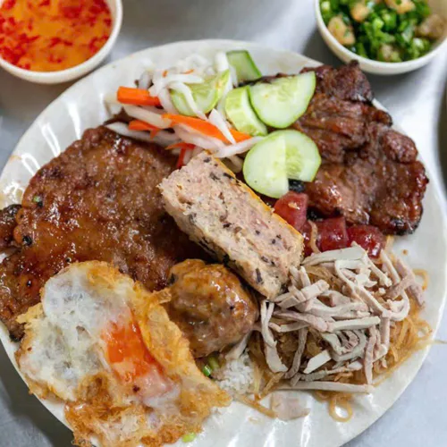
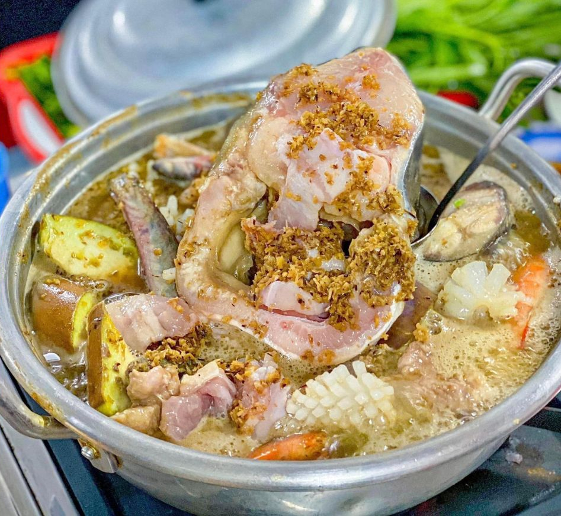
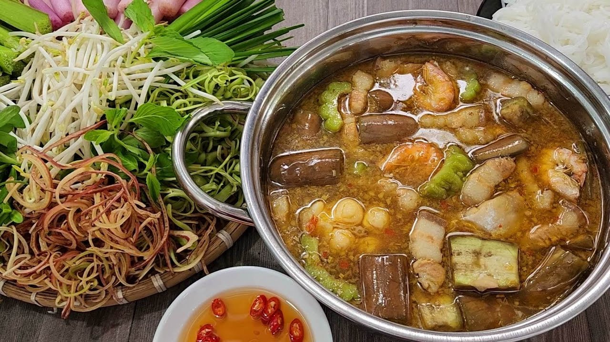
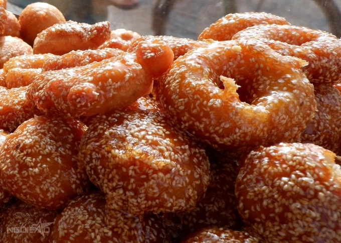
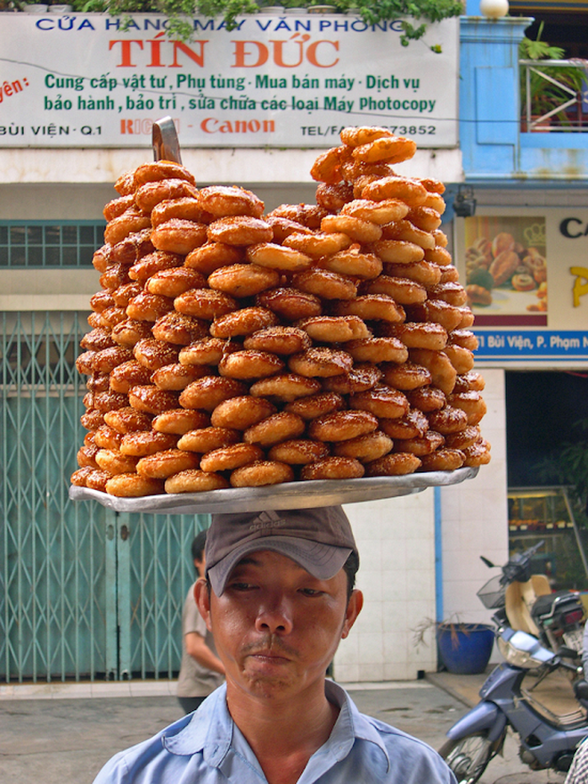

Cơm tấm Sài Gòn
Cơm tấm là một trong những món ăn đặc trưng làm nên bản sắc ẩm thực của Thành phố Hồ Chí Minh. Từ những hạt gạo tấm mộc mạc, người Sài Gòn đã sáng tạo nên một đĩa cơm hấp dẫn, đầy màu sắc và hương vị.
Điểm nổi bật nhất là miếng sườn nướng được ướp gia vị đậm đà, nướng trên than hồng tỏa hương thơm quyến rũ. Ăn kèm còn có bì heo dai giòn, chả trứng mềm mịn, trứng ốp la béo ngậy và đồ chua giòn mát. Khi chan thêm nước mắm chua ngọt đặc sánh, tất cả hòa quyện tạo nên vị mặn – ngọt – béo – thơm vô cùng hài hòa.
Một số địa điểm nổi tiếng như: Cơm Tấm Hồng Calmette, Cơm Tấm Tài, Cơm Tấm Sà Bì Chưởng, Cơm Tấm Ba Ghiền, Cơm Tấm 44,...


Lẩu mắm miền Tây
Lẩu mắm là món ăn đặc trưng của miền Tây Nam Bộ, gắn liền với sự trù phú của vùng sông nước Cửu Long. Linh hồn của món ăn nằm ở phần nước lẩu được nấu từ mắm cá linh hoặc mắm cá sặc, tạo nên hương thơm đậm đà khó lẫn.
Nồi lẩu mắm hấp dẫn với đủ loại hải sản và thịt như tôm, mực, cá, thịt ba chỉ, ăn kèm cà tím, bông súng, rau nhút, bông điên điển và nhiều loại rau đồng tươi xanh. Khi nước lẩu sôi nghi ngút, thực khách nhúng nguyên liệu vào, cảm nhận vị mặn mòi của mắm hòa cùng vị ngọt tự nhiên của tôm cá và hương thơm đặc trưng của rau.
Một số quán lẩu chuẩn vị có thể kể đến như: Lẩu mắm 140, Dì Sáu Miền Tây, Lẩu mắm Cô 7 Bạc Liêu, Tiệm lẩu Cù Lao,...


Bánh cam - Bánh còng
Bánh cam và bánh còng là những món ăn vặt quen thuộc, gắn liền với tuổi thơ của nhiều người miền Nam. Hai loại bánh thường được bán cùng nhau, có lớp vỏ vàng óng phủ mè trắng, tạo nên hình ảnh hấp dẫn ngay từ cái nhìn đầu tiên.
Vỏ bánh được làm từ bột nếp và bột gạo, chiên giòn trong dầu nóng. Bánh cam có nhân đậu xanh ngọt bùi, trong khi bánh còng không có nhân nhưng vẫn giữ được độ dẻo mềm đặc trưng. Khi cắn vào, lớp vỏ mỏng rụm tan nhẹ, hòa cùng vị ngọt của đường chảy óng ánh tạo nên hương vị khó cưỡng.
Hình ảnh những xe bánh cam, bánh còng trong tủ kính nhỏ hay những mâm bánh đầy ắp rong ruổi khắp các con phố đã trở thành nét đẹp quen thuộc của miền Nam.